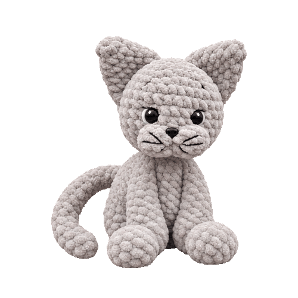

Over Misty
Met haar zachte vacht, lange poten en geborduurde snorharen is Misty een gezellig haakproject. Maak haar in zilvergrijs zoals op de foto’s, of kies je eigen kleur.
 Terug naar de homepagina
Terug naar de homepagina

Maak kennis met Misty: een zacht, grijs katje met driehoekige oren, een lange staart en een eigenwijs snoetje. Een knuffel vol karakter om zelf te haken.
Misty wordt ongeveer 30 centimeter lang. De voor- en achterpoten haak je tijdens het maken direct aan het lijf vast. De oren, snuit, kop en staart naai je daarna op hun plek.
Met haar zachte vacht, lange poten en geborduurde snorharen is Misty een gezellig haakproject. Maak haar in zilvergrijs zoals op de foto’s, of kies je eigen kleur.
Voor een katje zoals op de foto’s gebruik je:
Lees het patroon eerst helemaal door. Begin met de vier poten en haak daarna het lijf. Gebruik een steekmarkeerder om het begin van de toer terug te vinden.
Bij het vasthaken van een poot haak je door de laatste toer van de poot én door de steek van het lijf. Speld de losse onderdelen eerst vast voordat je ze vastnaait.
Wil je Misty aan een baby, jong kind of je hond geven? Gebruik dan geen veiligheidsogen. Je kunt de ogen in dat geval met zwart garen borduren. Controleer ook of alle onderdelen stevig vastzitten en werk alle losse draden goed weg.